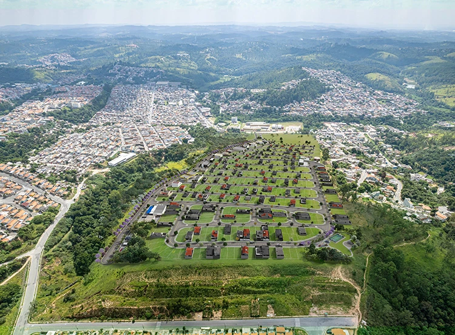

TAVEIRA / CAMPO LIMPO PAULISTA, SP
Um bairro.
Muitas possibilidades.
Entre no Jardim São Francisco.
Da vista aérea à frente dos lotes.
Estudo 3D ilustrativo. Não é levantamento do terreno.
NOVO JARDIM SÃO FRANCISCO
O bairro por inteiro
Implantação ilustrada · relevo não modelado
01 / 05
Implantação derivada da imagem de divulgação.
Arraste para girar · aproxime para explorar